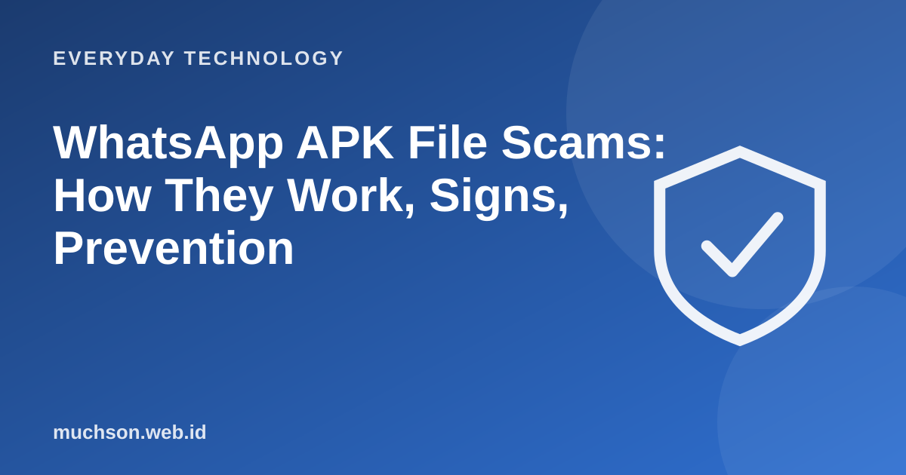

Home › Articles › Everyday Technology
Everyday TechnologyWhatsApp APK File Scams: How They Work, Signs, Prevention
One widespread scam: you receive a file with a convincing name, such as an invitation, a parcel receipt or a traffic fine, ending in .apk. Once installed, the phone can hand access to the scammers. It is easy to prevent if you know the pattern and one simple rule.

What is an APK and why is it dangerous?
An APK is the Android app file format. Official apps are installed through an app store that checks them. An APK file sent through a message skips that check, so it can contain malicious software that asks for wide permissions: reading SMS (including OTP codes), seeing notifications, accessing contacts, even controlling the screen.
Text description of the diagram
- A bait message: invitation, receipt, bill, fine
- An .apk file is sent: with a disguised name
- The victim installs it: and grants permissions
- The scammer takes over: OTPs, accounts, money
Signs to be suspicious of
Prevention
If you already installed it
- Turn on airplane mode or cut the internet connection straight away.
- Delete the suspicious app (if you cannot, use safe mode or factory reset).
- From another safe device, change the passwords of key accounts: email, banking, WhatsApp.
- Call your bank to block access or the card and check transactions.
- Tell your contacts that messages from you may be fake.
- Report it to the authorities and the relevant service providers.
A factory reset is the surest way to clear malware. Make sure important data is backed up first, and do not restore from an infected backup.